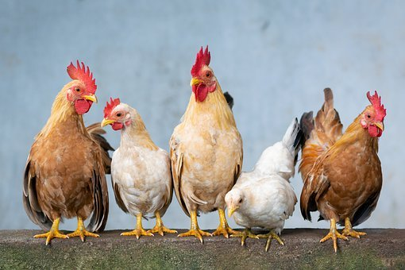

ANIMAL HUSBANDRY
POULTRY FARMING

Poultry farming is the form of animal husbandry which raises domesticated birds such as chickens, ducks, turkeys and geese to produce meat or eggs for food. It has originated from the agricultural era. Poultry – mostly chickens – are farmed in great numbers. More than 60 billion chickens are killed for consumption annually. Chickens raised for eggs are known as layers, while chickens raised for meat are called broilers.